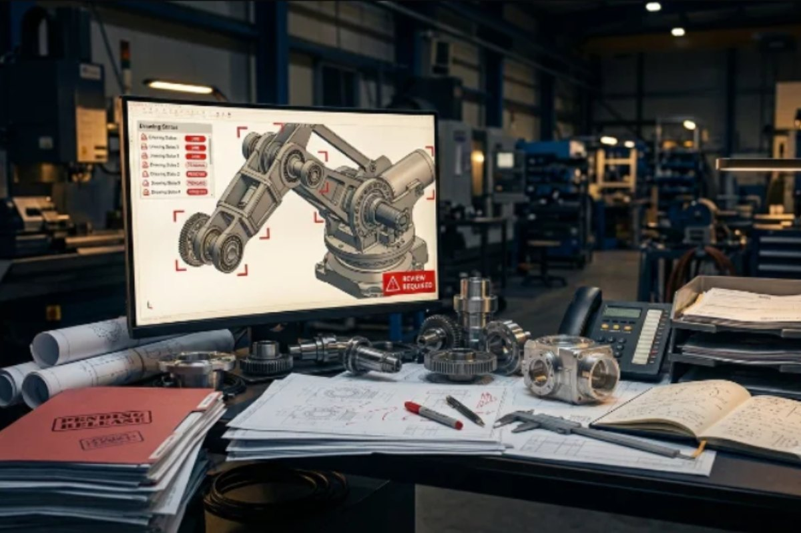
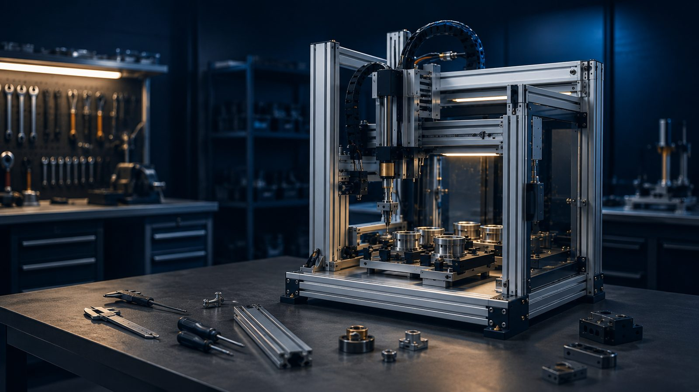
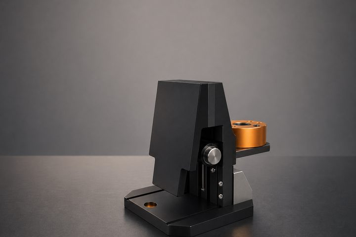
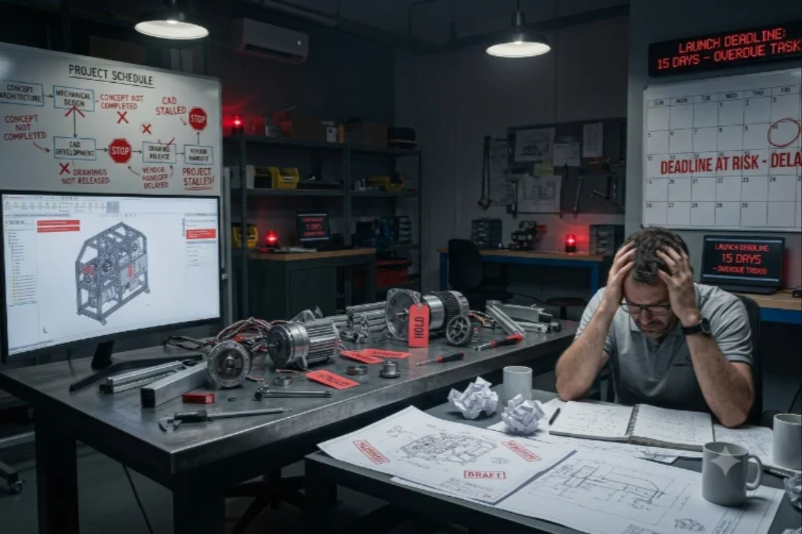
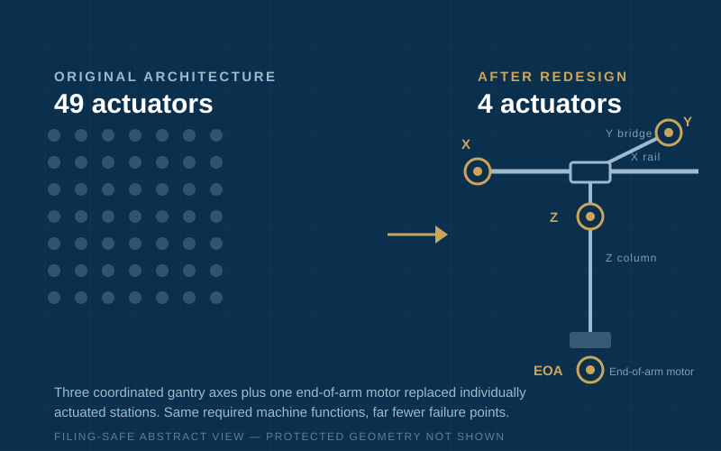
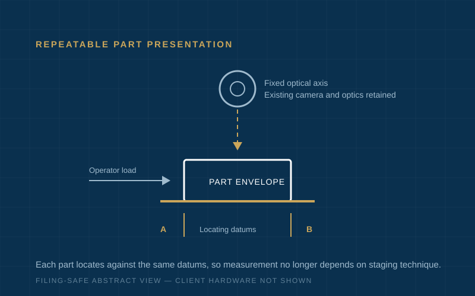

A machine or prototype project is stalled
Concept architecture, mechanical design, CAD development, drawing release, or vendor handoff has not been completed — and a deadline is at risk.
See related services →
Industrial Automation & Machine-Design Support · Irvine, CA
EngineeringXYZ helps manufacturers and industrial R&D teams develop concepts, drawings, control system design, fixtures, and prototypes for their own products and internal processes.
Project-specific industrial work only. EngineeringXYZ is not a California-licensed professional engineering firm and does not offer civil, structural, building/facility engineering, PE-stamped services, or electrical contracting or installation.
49 → 4 motors
Same required functions after mechanical redesign
10+ years
Automation and machine-design experience
Concept → build-ready
Defined design deliverables and client/vendor review points
What We Solve

Concept architecture, mechanical design, CAD development, drawing release, or vendor handoff has not been completed — and a deadline is at risk.
See related services →
Workholding, positioning, loading, inspection repeatability, or operator variation is costing throughput and quality.
See related services →
Mechanical backlog, drawing release, vendor coordination, or project recovery is slowing your internal team.
See related services →Selected Work

Machine Prototypes
A machine concept called for 49 motors — costly to build, wire, and maintain. A mechanical redesign delivered the same functions with 4 motors, reducing cost, controls complexity, and failure points.
“The old device used 49 motors and Marco’s design used 4 motors to achieve the same result.”
Client details withheld for confidentiality.
Read the case study →
Inspection and Test Systems
An inspection step relied on manual staging that varied by operator. EngineeringXYZ designed a positioning system that made part presentation repeatable and cut inspection handling time.
Client details withheld for confidentiality.
Read the case study →Why EngineeringXYZ
Marco Wu, Ph.D., serves as project lead for each agreed EngineeringXYZ scope. Additional specialists may support defined deliverables; every client, vendor, installer, and specialist remains responsible for its own work.
“In my 30 year + engineering career, Marco is one of the best engineers I have worked with. What impressed me the most, along with his expertise and knowledge, are his attitude and genuine interest in the engineering projects, both large and small. I would hire him again anytime and recommend him to any engineering outfit without hesitation.”
Yuki Kojima
V.P. Engineering, Taiyo Circuit Automation
“Marco expertly used Solidworks and PLC programming to build multiple custom automated manufacturing equipment with stringent specifications.”
Mark Wu
Director, Sensor Engineering
Common Questions
Share the current problem → Review technical fit → Define a focused first scope
Send a short nonconfidential description. EngineeringXYZ will first review organizational eligibility, scope, risks, and technical fit.
Discuss a Current ProjectNo large initial commitment required. Confidential project information can be reviewed under NDA.